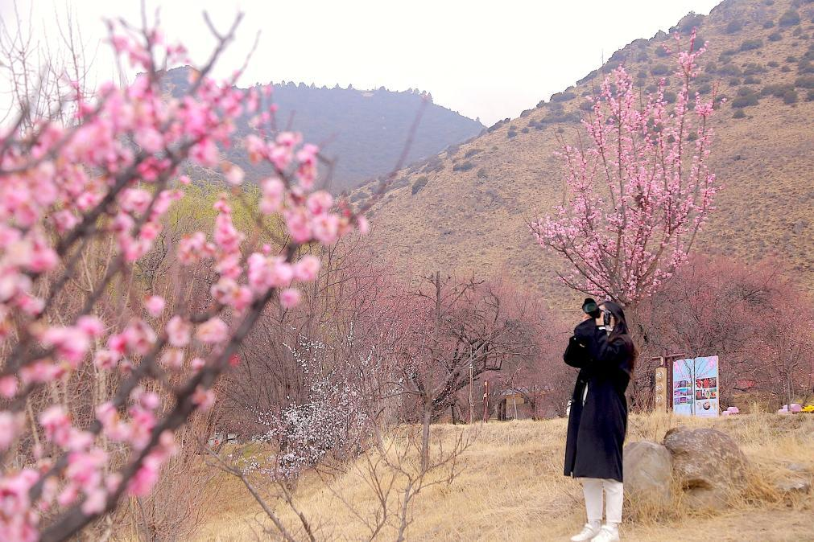

雪域高原春又来，“桃花源”里桃花开。
西藏林芝市巴宜区林芝镇嘎拉村，桃花千树万树，铺满山坡沟谷，如云霞落地，引得众多游客驻足欣赏。2021年7月，习近平总书记在嘎拉村考察时说：“这是老祖宗留下来的福利，送给你们一个桃花源啊。”
雪域踏春，满目欣喜。在青藏高原这片神秘而美丽的土地上，乡村发展如诗如画，群众生活更加富裕，民族团结更加牢固。
镜头一：桃花树下话愿景
【保护好西藏生态环境，利在千秋、泽被天下，太重要了！在这里，生态具有非常重要的战略意义——习近平】
春天的气息，沿着雅鲁藏布江蔓延，为林芝东南的一处山谷间带来了万花齐放的美丽景象。
“桃花源”嘎拉村，迎来了一年中最热闹的时刻。
▲游客在嘎拉村赏花游玩，拍摄盛开的桃花。新华社记者 邱星翔 摄
全国各地游客慕名前来观赏。广东省茂名市的张晓夫妇，开车自驾3000多公里，只为到此一睹桃花盛景。
“为了能参加今年的桃花节，我们提前三个月就预订了酒店。”张晓兴奋地告诉记者。
嘎拉村，一个因桃花盛景而快速发展起来的村庄。村党支部书记边巴介绍，2023年全村接待游客超11万人次，旅游收入超341万元，今年游客比往年更多，预计收入会创新高。
“真是没想到，以前当柴烧的桃树，如今成了村里的‘摇钱树’。”边巴说。
村民告诉记者，十几年前，村里的泥巴路满是牛粪，滑坡、泥石流时常发生。每到冬天，家家上山砍树，既当柴火，也卖钱……
变化始于2014年，这一年嘎拉村开始进行村居环境治理，实施人畜分离。建观景亭、道路硬化，管网入地、绿化亮化，绿色篱笆、瓜果庭院建设……随着环境的改善，嘎拉村桃花美景的名声也越传越远。
如今，村里1200多棵野生桃树，已经成为“重点保护对象”。村民说，遇上刮风导致桃枝断裂，受损处都会被立即小心绑好，不让断枝枯萎。
近年来，嘎拉村吸引着天南海北越来越多的游客。借此“东风”，嘎拉村通过探索生态价值转换路径，建设农业综合体等项目，使村集体经济不断壮大，同时延伸发展采摘园、油菜花观赏项目。2023年嘎拉村户均分红达11.4万元。
眼下正值桃花季，嘎拉村每天游人如织，桃花园设置了移动咖啡、民族服饰旅拍、美食特产等摊位，还有射响箭、骑马观光等体验打卡项目。
“守护绿水青山、走生态旅游是条正路。”40岁的嘎拉村村民达瓦坚参说，“我们要把老祖宗留下来的‘桃花源’保护好、传下去。”